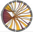

Below are some of my visualizations that have been featured in various locations around the web.
Click the image to go to the website.
|
RENCI created a blog post on my work developing a tool to segment nuclei from 3D microscopy images of the brain, with Guorong Wu and Jason Stein at UNC. You can read the BMC Bioinformatics paper published on the Segmentor tool here.
Collaborators: Guorong Wu, Jason Stein |
|
I worked with Professor Tim Chartier to devlop an interactive website to create tilings of a plane that help students learn about homogeneous coordinates and symmetries.
The website was based on a similar interactive website from the Shoder Education Foundation.
Collaborators: Tim Chartier |
|
I worked with Professor Tim Chartier to devlop an interactive website for the touching puzzle, which he uses to help teach concepts related to computational complexity.
Collaborators: Tim Chartier |
| 
|
I developed a directed chord diagram to help Professor Tim Chartier's Cat Stats group at Davidson College visualize assists in basketball games.
These visualizations became a feature via "Assist Map Mondays."
Collaborators: Tim Chartier |
|
I worked with Professor Tim Chartier from Davidson College to develop this interactive website to help teach concepts related to subdivision surfaces, often used in computer graphics.
This work was used to help illustrated our article, "Pixar's Linear Algebra," published in IMAGE, the bulletin of the International Linear Algebra Society.
Collaborators: Tim Chartier, Tabitha Peck |
|
I worked with Professor Tim Chartier from Davidson College to develop this interactive website to help teach linear algebra concepts.
Collaborators: Tim Chartier |
|
The CASC 2015 Brochure featured this visualization displaying
the difference between using relativistic and non-relativistic calculations when computing the charge distribution of a molecule
containing Ruthenium, which is being investigated for applications in solar fuels. This visualization was also created using
Voluminous.
Collaborators: Jeff Tilson |
|
The TeraGrid '08 Visualization Gallery: The Beauty of Science featured this visualization, which displays
the difference between using relativistic and non-relativistic calculations when computing the charge distribution of a Uranium atom.
The Voluminous visualization tool I developed for creating these images can be downloaded
here.
Collaborators: Jeff Tilson, Eric Knisley |